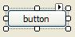
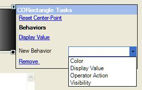

When you select a form component, it displays one or more glypha glyph is a specific graphic symbol, for instance employed by form components, which when clicked launch alternate configuration dialogs. that
provide alternate methods for their configuration, as follows:
Tasks
menu glyph:displayed in their top right
corner of form components that support smart tag functionality.
This shows the Tasks menu glyph of a selected
Button control:

When the glyph is clicked:
A menu of form
component-specific tasks is displayed and
If this is a visible
form component, behaviours can be configured. For details of Behaviours
which can use the properties of the form component to display the value
of your data, see About Behaviours.
This displays the tasks menu provided for the Rectangle
graphic element, which provides a Rectangle-specific tasks of resetting
the centre point around which this Rectangle is rotated and allows Behaviours
to be added and removed:

Property
event triggers glyph: displayed in the lower
right corner of visible form components that are used as an event trigger
for any spider on a graphic form. Click for more details:in other words whose properties are triggered by events to provide their
values to other spiders/properties/data elements.
This shows the properties of a selected Button control,
that are currently being triggered by events and how the Text
property is triggered by the 'Click' event of the 'button' control and
how the Font property is triggered
by the 'OnInitialised' event of the 'Constant1' spider:

 that
provide alternate methods for their configuration, as follows:
that
provide alternate methods for their configuration, as follows:  as follows:
as follows: